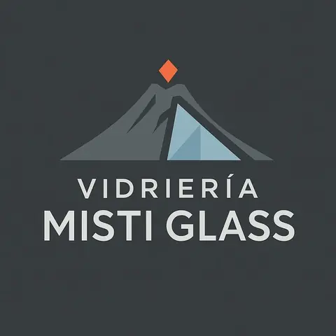
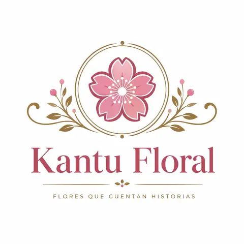
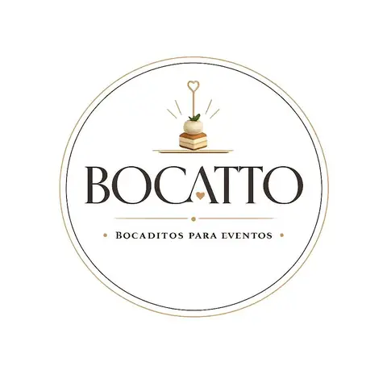

01
Dirección & estrategia
Definimos prioridades, objetivos, planes de acción y criterios para el desarrollo sostenido de cada marca.
DIRECCIÓN INTEGRAL DE MARCAS
Grupo Tenno centraliza la dirección, administración, supervisión y crecimiento de negocios con identidad propia. Integramos estrategia, operaciones y ejecución para que cada marca avance con orden, consistencia y propósito.
 GRUPO TENNO
Dirección central
GRUPO TENNO
Dirección central
GRUPO TENNO
No somos una marca que reemplaza a las demás. Somos la estructura que las organiza, las conecta y las impulsa.
Grupo Tenno trabaja detrás de cada proyecto para transformar objetivos en acciones concretas: planificamos, coordinamos recursos, controlamos avances, fortalecemos procesos y acompañamos la evolución comercial de cada negocio.
QUÉ HACEMOS
Centralizamos las áreas clave para que cada marca pueda mantener su identidad mientras opera con una visión empresarial compartida.
Definimos prioridades, objetivos, planes de acción y criterios para el desarrollo sostenido de cada marca.
Organizamos recursos, presupuestos, control de gastos, seguimiento financiero y decisiones administrativas.
Coordinamos abastecimiento, proveedores, procesos, entregas y necesidades operativas de cada proyecto.
Acompañamos el proceso comercial, la atención, el seguimiento de clientes y la mejora de la experiencia final.
Construimos presencia, campañas, contenidos y lineamientos que hacen visible la propuesta de cada marca.
Buscamos herramientas, canales y soluciones digitales que mejoren la gestión y abran nuevas oportunidades.
Monitoreamos avances, detectamos necesidades y damos seguimiento para mantener el rumbo de cada negocio.
Resolvemos necesidades transversales y refinamos procesos para sostener una operación cada vez más eficiente.
NUESTRAS MARCAS
Cada proyecto conserva su propia personalidad, público y propuesta. Grupo Tenno aporta la estructura administrativa y estratégica que permite desarrollarlos de manera coordinada.

Trabajos especializados y soluciones en vidrio para hogares, negocios y proyectos, con atención a medida y enfoque en acabados funcionales.
Visitar Facebook ↗
Una propuesta dedicada a seleccionar vinos para compartir, celebrar y acompañar momentos especiales, con atención cercana y personalizada.

Flores, detalles y arreglos creados para expresar emociones y acompañar ocasiones especiales con una identidad cálida y cuidada.
Gestionado por Grupo Tenno
Una propuesta creada para disfrutar y acompañar reuniones y celebraciones con bocaditos pensados para diferentes momentos y eventos.
Gestionado por Grupo Tenno
DIRECCIÓN DE GRUPO TENNO
“Grupo Tenno nace para organizar, conectar y hacer crecer proyectos distintos bajo una misma visión de trabajo.”
Desde la dirección de Grupo Tenno, Aaron Díaz coordina la visión general y el seguimiento de las marcas, conectando decisiones administrativas, comerciales, operativas y digitales para mantener un crecimiento ordenado y coherente.
NUESTRA FORMA DE TRABAJAR
Cuidamos el resultado y también el proceso que lo hace posible.
Asumimos cada marca como un proyecto que requiere seguimiento real.
Tomamos decisiones pensando en avanzar de forma sostenible y ordenada.
Probamos nuevas herramientas, canales e ideas cuando agregan valor.
CONTACTO
Para consultas corporativas, alianzas o información sobre nuestras marcas, puedes comunicarte directamente con la dirección del grupo.